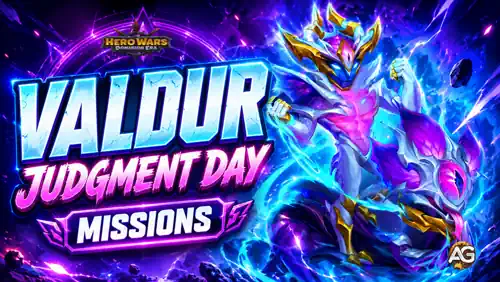

Judgment Day is the introductory event for Valdur and Echo. It combines a seven-chapter adventure with the main Judgment Day quest set and a second progression event called Heralds of the Rift. Efficient play comes from coordinating chapter battles, Hero Stall purchases, Development Shop targets, and Valdur's own Titan upgrades instead of treating each mission as a separate expense.
The event uses the same broad economy as Fall of the Veil, but Alecto's event resources do not carry over. Begin Judgment Day with a fresh plan, use the island's extra Medallions and Valor Coins, and delay irreversible spending until you understand which chapter and Valdur milestone you can realistically reach.

Judgment Day tracks chapter Energy, Valor Coins, Sapphire Medallions, stall progress, and event Relics at the same time. Resetting a chapter restores its Hero Stall coins, so a reset gives you another buying cycle and another opportunity to test a different team. The full hero selection may not appear until the latest stages of each chapter.
The event island also contains Valor Coins and Sapphire Medallions. Collect those nodes before calculating how much currency you still need; ignoring the island can make a reachable shop or chapter target look more expensive than it really is.
Alexandre's main recommendation: upgrade the Tome before putting large amounts of event currency into the other Relics. The Tome improves your coin generation, so investing there early can reduce the cost of everything that follows.
Important reset: Valor Coins, Sapphire Medallions, Energy, and Relics from Alecto's Fall of the Veil event reset before Judgment Day starts. Do not save Alecto's event-only resources for Valdur.
Reward data status: objective thresholds are available, but the individual reward quantities for those mission tiers remain unconfirmed. This guide preserves every known mission without filling unknown reward cells with guesses.
Your actual endpoint depends on free gifts, island pickups, bundles, and the live chapter economy. The final chapter and its Distorted Spirit Summoning Sphere may require paid progress, but a fixed cash estimate is unreliable before every gift and price is visible. Let the event reveal its real economy before buying, then leave enough time to finish the battles.
The main event has eight mission chains. Battle wins and careful stall spending provide the most accessible progress. Emerald purchases, Emerald spending, and VIP Points are optional budget chains; never force them only to clear one more reward tier.
| Objective | Milestones | Reward Status |
|---|---|---|
| Total Judgment Day victories | 1, 2, 3, 5, 7, 10, 13, 17, 21, 26, 31, 37, 43, 50, 57, 64, 71 | Not yet confirmed |
Only purchased Emeralds advance this chain. Emeralds earned from gameplay or the free pass do not replace a purchase milestone unless the live event explicitly says otherwise.
| Objective | Milestones | Maximum |
|---|---|---|
| Emeralds purchased | 100, 300, 1,000, 2,500, 5,000, 10,000, 15,000, 25,000, 40,000, 60,000, 90,000, 120,000 | 120,000 Emeralds |
Look for purchases that advance Judgment Day and improve your normal account at the same time. Event Energy, Titan development, and overlapping mission objectives create more value than empty spending.
| Objective | Milestones | Maximum |
|---|---|---|
| Emeralds spent | 100, 500, 3,000, 7,000, 12,000, 18,000, 25,000, 35,000, 50,000, 70,000, 90,000, 120,000, 150,000 | 150,000 Emeralds |
Gather Hero Stall fragments until the seven listed heroes reach maximum rank. The later chapter stages may be necessary to unlock every target in the stall.
| Source | Maximum-Rank Hero Targets | Count |
|---|---|---|
| Hero Stall fragments | Byrna, Adam, Lyria, Aidan, Cascade, Iris, Rufus | 7 objectives |
The counter combines purchases from all chapter playthroughs, so pet purchases made after a reset continue the same mission chain.
| Objective | Milestones | Scope |
|---|---|---|
| Buy any pet from the Hero Stall | 1, 2, 3, 4, 5, 6, 7, 8, 9, 10 purchases | Total across every playthrough |
| Objective | Milestones | Maximum |
|---|---|---|
| VIP Points earned during Judgment Day | 500, 1,000, 1,500, 2,000, 2,500, 3,000, 3,500, 4,000, 4,500, 5,000, 6,000, 7,000 | 7,000 VIP Points |
Complete a Titan, paired Titan entry, or Influence Skill by collecting its fragments from the Development Shop. Start with targets already near maximum rank so the mission costs fewer fragments.
| Group | Maximum-Rank Targets |
|---|---|
| Fire Titans | Moloch, Vulcan, Ignis, Araji |
| Earth Titans | Angus, Sylva, Avalon, Eden |
| Dark Titans | Brustar, Keros, Mort, Tenebris |
| Event Titan entries | Alecto; Valdur and Echo; Umbra and Caligo; Tidus and Gelo; Verdoc and Phyto; Asherona and Pyro |
| Influence Skills | Star Dust, Gravitational Anomaly, Nova Flare, Dark Matter, Main Sequence, Dreamveil, The Depths Whisper, Murmur of the Crags, Triple Cycle, Call of Elements |
Every listed shop offer costs one Sapphire Medallion, making this effectively a shop-purchase counter.
| Objective | Milestones | Maximum |
|---|---|---|
| Sapphire Medallions spent | 3, 6, 10, 20, 30, 40, 50, 60, 70, 80, 90, 100 | 100 Medallions |
This special event adds six development chains. Unlike Alecto's Birth of Will line, Valdur and Echo have a separate evolution chain called Exodus from the Aether, so Soul Stones generate multiple quest completions on the route from 2 to 6 stars.
| Objective | Level-Up Milestones |
|---|---|
| Level up Valdur and Echo | 20, 40, 60, 80, 100 total level-ups |
| Objective | Star Milestones |
|---|---|
| Evolve Valdur and Echo | 2, 3, 4, 5, and 6 stars |
| Objective | Skin-Level Milestones |
|---|---|
| Upgrade Valdur and Echo's Default Skin | Level 5, 10, 20, 30, 40, 50, 60 |
| Artifact | Star Milestones |
|---|---|
| Zorval's Reins | 2, 3, 4, 5, and 6 stars |
This chain counts the combined Artifact levels gained by Valdur and Echo. The final objective requires 360 total levels across their three Titan Artifacts.
| Objective | Total Artifact Levels Gained |
|---|---|
| Upgrade Valdur and Echo's Titan Artifacts | 12, 24, 42, 60, 90, 120, 150, 180, 210, 240, 270, 300, 330, 360 |
Growth Reward counts completed Heralds of the Rift quests. Collect intermediate rewards immediately because they may return resources that help with the next development threshold.
| Objective | Completed Heralds of the Rift Quests |
|---|---|
| Complete special-event quests | 16, 19, 22, 25, 28, 31, 34, 37, 40, 43, 46 |
The event has seven chapter reward packages. The available data displays “Relic Level 1” and “0 Energy” beside each chapter, which appear to be provisional interface values rather than confirmed final costs.
| Chapter | Reward 1 | Reward 2 | Reward 3 |
|---|---|---|---|
| I | 50,000 Essence of the Elements | 10,000 Valor Coins | 1 Sapphire Medallion |
| II | 30 Large Skin Stone Chests | 20,000 Valor Coins | 2 Sapphire Medallions |
| III | 25,000 Titan Skin Stones | 20,000 Valor Coins | 2 Sapphire Medallions |
| IV | 20,000 Valor Coins | 2 Sapphire Medallions | 150 Primal Catalysts |
| V | 50,000 Valor Coins | 10 Sapphire Medallions | 100 Elemental Catalysts |
| VI | 50,000 Valor Coins | 10 Sapphire Medallions | 1 Gift of Dominion |
| VII | 1 Distorted Spirit Summoning Sphere | 50,000 Valor Coins | 10 Sapphire Medallions |
The seven headline packages total 220,000 Valor Coins and 37 Sapphire Medallions. Chapter VII is the prestige target because it contains the Distorted Spirit Summoning Sphere.
Fox charges one Sapphire Medallion for every offer. Valdur-specific Artifact Fragments are the hardest items here to replace after the event, so they lead the priority list. Generic resources and hero equipment should be purchased only after the Titan plan is covered.
| Offer for 1 Sapphire Medallion | Quantity | My Priority |
|---|---|---|
| Zorval's Reins Fragments | 500 | Very High - Valdur-specific Weapon progress |
| Seal of Calling Fragments | 500 | Very High - direct Valdur Artifact progress |
| Crown of Distortion Fragments | 500 | Very High - direct Titan Artifact progress |
| Echo of Change | 250 | High - event development material |
| Titan Potions | 20,000 | Medium - supports Birth of Will |
| Essence of the Elements | 40,000 | Medium - supports Elemental Forge |
| Titan Skin Stones | 15,000 | High - supports Manifestation of Form |
| Lesser Hero Soul Stone Chest | 1 | Medium - flexible hero progress |
| Chaos Particles | 700 | Medium - useful for pet development |
| Large Skin Stone Chests | 20 | Medium - flexible hero skin progress |
| Great Enchantment Runes | 50 | Medium - broad glyph progress |
| Huge EXP Potions | 300 | Low - widely replaceable |
| Bottled Energy | 15 | Medium - useful for overlapping Energy goals |
| Flawless Artifact Chests | 60 | Medium - flexible hero Artifact progress |
| Hand of Glory | 10 | Situational |
| Minotaur's Head | 10 | Situational |
| Giant-Slayer | 10 | Situational |
| La Mort's Card | 2 | Situational |
| Flaming Heart | 10 | Situational |
| Trine | 3 | Situational |
| Lycanthrope's Fang | 2 | Situational |
| Alchemist's Set | 2 | Situational |
| Aigrette of Nocturnal Cicadas | 1 | Situational |
| Evening Curfew | 1 | Situational |
| Dragon's Heart | 1 | Situational |
Best order for most Valdur builders: Zorval's Reins, Seal of Calling, and Crown of Distortion first; then the Skin Stones or upgrade materials needed for your next Heralds of the Rift milestone; generic hero resources last.
The Altar of Fate is listed for Judgment Day, but its rewards, odds, currency, and rules were not available in the supplied data. Wait for the live interface before reserving resources or evaluating its value. No speculative reward table is included here.
The ticket price and any immediate purchase package are not yet confirmed. These are the listed track totals only, so check the live price before deciding whether the paid track fits your budget.
| Reward | Free Track | Paid Track |
|---|---|---|
| Avatar | — | Player Avatar #1744 |
| Energy Crystals | 40 | 150 |
| Sapphire Medallions | 4 | 20 |
| Emeralds | 2,000 | 10,000 |
| Explorer's Moves | 4 | 40 |
| Zorval's Reins Fragments | 200 | 1,000 |
| Seal of Calling Fragments | 200 | 1,000 |
| Titan Skin Stones | 4,000 | 20,000 |
| Essence of the Elements | 30,000 | 150,000 |
| Titan Potions | 12,000 | 60,000 |
| Titan Artifact Spheres | 75 | 375 |
| Bottled Energy | 2 | 10 |
| Gold | 6,000,000 | 30,000,000 |
| Summoning Spheres | 15 | 75 |
| Titan Resource Chests | 1 | 5 |
The Path advances with Glory Points, which are listed as non-giftable. The free track supplies useful starter fragments, but the paid track should be judged only after its real price and instant purchase rewards are known.
Remaining event resources turn into Titan Resource Chests. Spend useful currency in Fox's shop first unless the published conversion is deliberately more valuable for your account.
| Remaining Event Resource | Conversion |
|---|---|
| 1 Sapphire Medallion | 10 Titan Resource Chests |
| 3 Energy Crystals | 1 Titan Resource Chest |
| 1,500 Valor Coins | 1 Titan Resource Chest |
| 20 Buffs | 1 Titan Resource Chest |
| 2 Amulet Levels | 1 Titan Resource Chest |
| 1 Tome or Grail Level | 1 Titan Resource Chest |
The shop closes with the event. Perform a final inventory check before Judgment Day ends, use your important Medallions, and do not assume Fox remains available during the conversion period.
Judgment Day rewards players who coordinate Valdur's personal development with the chapter economy. Soul Stones are particularly valuable because the separate Exodus from the Aether chain grants milestones at every star from 2 through 6. Artifact investment also overlaps Zorval's Reins evolution with the 360-level Elemental Forge chain, making saved Titan resources far more efficient during the event than before it.
Build around a clear endpoint. Claim island currency, improve the Tome, clear the accessible chapters, and buy Valdur-specific Artifact Fragments before generic equipment. The event becomes expensive when every mission is treated as mandatory; it becomes manageable when you choose a realistic chapter, star level, and shop target before spending.
Did this Valdur event missions guide help you plan Judgment Day? Which Valdur and Echo milestone are you targeting, and what will you buy from Fox? Join the Alexandre Games Blog comments to share your route, questions, and corrections.
Click the button below to get started: